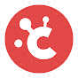

Free 3D animation software, plus the courses and creators Jared recommends to get started.

The program that I use to create these animations is called Blender. Some people are surprised to learn that Blender is free!
So… where to start learning? Blender can be confusing at first and I recommend starting with a good beginner course. There are plenty of good videos and playlists on YouTube for free, so I suggest starting there.
If you are willing to spend a little bit of money, it can be worth it. Below are the places I recommend you start learning.
Four creators and platforms behind most of what's on the channel.
Andrew Price's beginner Donut series and a deep library of free YouTube tutorials. The classic starting point.
Free Blender beginners course, plus structured deep dives into sculpting, Grease Pencil, and environment work.
Structured, project-based Blender training with mentorship. Use code jaredowen for 10% off an annual membership.

Cinematic lighting, procedural texturing, and hard-surface modeling for when you're ready to push beyond beginner.
Some of the links above are affiliate links.
A handful of free creators worth following alongside the courses above.
The official Blender channel. Stay up to date on what's happening with the newest versions of Blender.
Game design and game art using Blender. Also has a Blender beginner playlist.
Blender hard surface tutorials. One of the founders of The Blender Bros.
Proceduralism in Blender using the material nodes and geometry nodes.
Curtis is kind of the Blender community guy. He explores new features and shares what other people are up to in the Blender world.
Creates amazing animation projects, then walks through complete tutorials on how he did them.